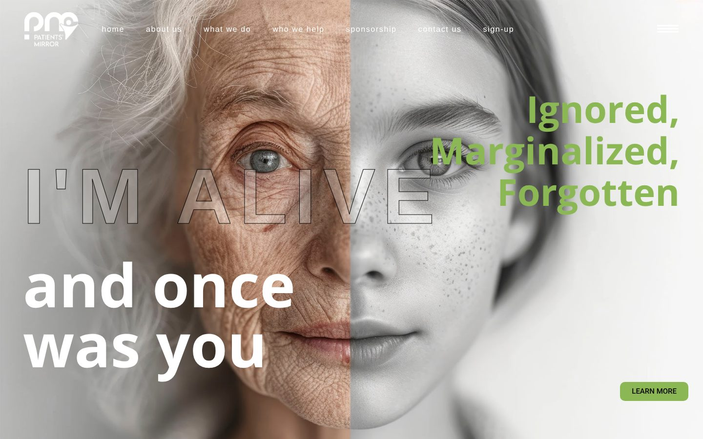
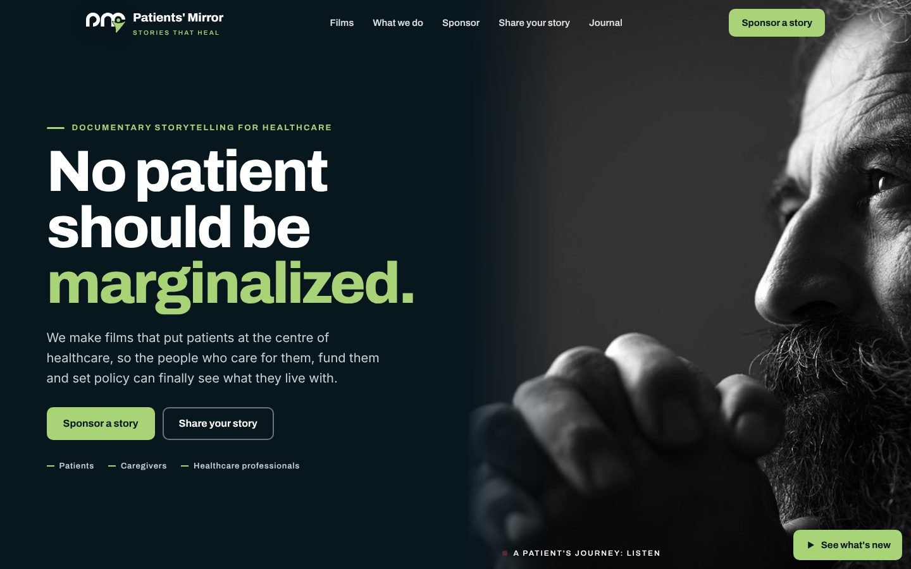
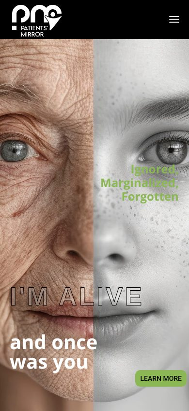
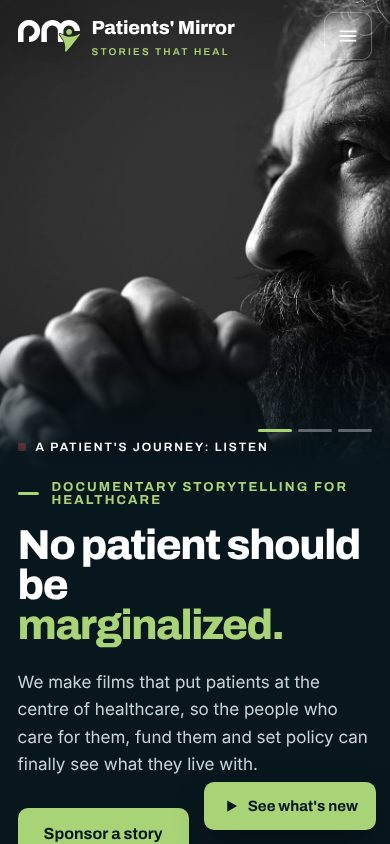

Their current homepage on the left, the redesign on the right. Same company, same words, same photos and films. A far stronger first impression, and a real path to sponsorship revenue.
Desktop
First screen on a laptop.
Current

New

Text no longer covers faces. The old hero laid outlined words across the woman's eyes. Now the words and the portrait each get their own side.
One clear message. Four slides of mixed messages became one headline that types out the problem: "No patient should be ignored."
Two buttons that earn money. "Sponsor a story" and "Share your story" replace a lone "Learn more".
Phone
First screen on a phone.
Current

New

What changed, and why
Page by page.
Films: their videos only played as silent background loops. Now each one plays with a real play button, so a sponsor sees the quality of the work in seconds.
Sponsorship: lived on a separate page with a different look and a generic HubSpot form. Now it's a 6-step brief builder on the main site that hands their team a scoped, qualified lead.
Patient sign-up: the old form asked for a full home address, even though their own disclosure says "name and phone number only". The new form matches their privacy rules, with the 5 steps shown up front.
Who we are: long italic paragraph became a statement that lights up as you scroll.
What we do: six long paragraphs became six tappable chapters.
Fixed: typos in the old copy ("Its more", "a professional group of specializing", "beyon"), and broken template leftovers in the media library.
 Patients' Mirror
Patients' Mirror